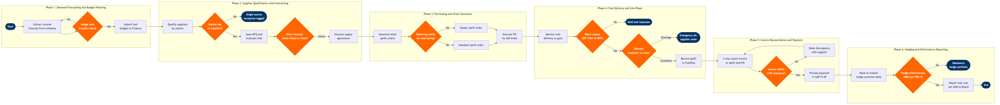

Fuel Procurement & Supply Chain
Corporate Support Functions › Procurement & Supply Chain · 17 L4 steps · 6 phases · 8 decision gates · Updated 2026-03-19 22:46
📊
Process Flow Diagram (BPMN)

📋
L4 Process Steps
| Step | Step Name | Role / Swim Lane | System | Input | Output | KPI | Dec? | Exc? |
|---|---|---|---|---|---|---|---|---|
Phase 1 1.1 |
Extract fuel volume forecast from flight schedule | Fuel Planning Analyst | Amadeus SkyWORKS | Approved flight schedule (SSIM), fleet assignment by station | Station-level fuel volume forecast (US gallons by month, 12-month horizon) | Forecast accuracy ≥95% vs actual uplift volume at month-end | N | N |
| 1.2 | Model price scenarios and set hedging target | Fuel Risk Manager | OpenLink Endur | Fuel volume forecast, Platts jet fuel spot prices, 12-month forward curve | Hedge ratio recommendation (% of forward volume), scenario P&L analysis | Hedge ratio within board-approved policy band of 30–70% of forward 12-month volume | Y | N |
| 1.3 | Submit annual fuel budget to Finance | Director of Fuel Procurement | SAP S/4HANA Finance (CO-PA) | Approved volume forecast, hedged price scenarios, prior-year actuals | Approved fuel OPEX budget by cost centre and quarter | Budget variance ≤±5% vs actual fuel cost at year-end | N | N |
Phase 2 2.1 |
Evaluate and qualify fuel suppliers by station | Fuel Procurement Manager | SAP Ariba Supplier Lifecycle Management | Station list, ICAO airport codes, DEF STAN 91-091 quality standards, supplier capability submissions | Approved supplier register by airport with qualification status | ≥2 qualified suppliers at every Tier-1 hub; 100% supplier compliance with ASTM D1655 specification | Y | Y |
| 2.2 | Issue RFQ and evaluate competitive fuel bids | Fuel Procurement Manager | SAP Ariba Sourcing | Volume forecast by station, approved supplier register, pricing reference (Platts Jet A) | Scored bid comparison matrix, recommended award by station | RFQ cycle time ≤21 calendar days; minimum 3 bids received per major hub station | N | N |
| 2.3 | Negotiate and execute fuel supply agreement | Director of Fuel Procurement | SAP Ariba Contracts | Bid comparison matrix, legal terms template, approved supplier, volume commitments | Signed fuel supply agreement (price formula, volume commitment, quality specs, liability caps) | Contract coverage ≥90% of annual volume; contract execution ≤30 days from award decision | Y | N |
Phase 3 3.1 |
Generate daily fuel uplift orders from flight ops | Fuel Operations Coordinator | FuelPlus | Day-of flight plan (Jeppesen FliteDeck), fuel release quantities, tankering policy parameters | Fuel uplift orders by flight number and station for next 24 hours | Order accuracy ≥99.5% (uplift quantity within ±2% of flight plan requirement); order generation completed ≥4 hours before first departure | N | N |
| 3.2 | Evaluate tankering opportunity vs payload penalty | Fuel Operations Coordinator | FuelPlus Tankering Module | Station fuel price differentials, aircraft weight/balance constraints (MTOW), cost-per-seat-mile model | Tankering go/no-go decision with estimated cost saving per flight | Tankering savings ≥$0.01/US gallon average across network; zero overweight departure events attributable to tankering | Y | N |
| 3.3 | Execute purchase order and payment authorisation | Fuel Procurement Manager | SAP Ariba (Purchase Orders) + SAP S/4HANA Finance (AP) | Approved uplift orders, active supply contract reference, station fuel card limits | Confirmed PO, EFT payment instruction or fuel card charge authorisation | PO-to-supplier-confirmation cycle ≤4 hours for same-day uplifts; zero declined fuel card transactions | N | Y |
Phase 4 4.1 |
Monitor real-time fuel delivery at departure gate | Into-Plane Agent | ACARS (SITA) + FuelPlus | Fuel truck arrival notification, loadsheet, flight plan fuel quantity (block fuel + reserve) | Uplift completion confirmation, fuel density and quantity record (litres and kg) | Fuelling completion ≥30 minutes before scheduled departure; zero misfuel incidents | N | Y |
| 4.2 | Validate fuel quality certificate at delivery | Into-Plane Agent | Aviation Quality Database (AQD) | Fuel delivery note, batch certificate of analysis, DEF STAN 91-091 / ASTM D1655 spec sheet | Approved fuel release certificate or hold notice with reason code | 100% batch documentation compliance before uplift; zero fuel contamination incidents per year | Y | Y |
| 4.3 | Manage fuel shortage or delivery failure exception | Fuel Operations Coordinator | FuelPlus + SITA Airport Management System (AMS) | Shortage notification from into-plane agent, alternate supplier register, flight departure window | Emergency fuel order confirmation or flight departure hold decision with ATC notification | Shortage resolution ≤45 minutes; zero flight cancellations attributable to fuel unavailability | Y | Y |
Phase 5 5.1 |
3-way match fuel invoice to uplift and PO | Fuel Accounting Analyst | SAP S/4HANA Finance (MM-IV) + FuelPlus | Supplier invoice, FuelPlus uplift record, approved PO | Matched invoice cleared for payment or discrepancy flag with reason | Automated 3-way match rate ≥97%; discrepancy identification within 2 business days of invoice receipt | Y | Y |
| 5.2 | Resolve invoice discrepancy with fuel supplier | Fuel Accounting Analyst | SAP Ariba Supplier Collaboration | Discrepancy report, original supplier invoice, FuelPlus uplift records, PO | Approved credit note or revised invoice accepted into SAP FI-AP | Discrepancy recovery rate ≥95% within 30 days; average credit recovery ≥$0.005/gallon on disputed volume | N | N |
| 5.3 | Process approved fuel payment and post to GL | Accounts Payable Specialist | SAP S/4HANA Finance (FI-AP) | Approved invoice, contract payment terms, supplier bank details, FX daily rate | Payment run confirmation, GL posting to Fuel OPEX cost centre | On-time payment rate ≥98% per contract terms; zero duplicate payment incidents per quarter | N | N |
Phase 6 6.1 |
Mark-to-market hedge positions and test effectiveness | Fuel Risk Manager | OpenLink Endur | Platts jet fuel spot price, 12-month forward curve, open hedge position register | Daily MTM P&L report, hedge effectiveness ratio (prospective and retrospective) | Hedge effectiveness ≥80% (IFRS 9 hedge accounting qualification threshold); MTM report delivered by 09:00 each trading day | Y | Y |
| 6.2 | Report fuel cost per ASM to senior leadership | Director of Fuel Procurement | Tableau + SAP S/4HANA Finance (CO-PA) | Monthly uplift actuals (FuelPlus), invoice data (SAP FI-AP), hedge P&L (OpenLink), budget (SAP CO-PA) | Fuel cost per available seat mile (CASM) report, budget variance analysis, rolling 12-month forecast | Fuel CASM ≤$0.055; variance report published within 5 business days of month-end close | N | N |
📋